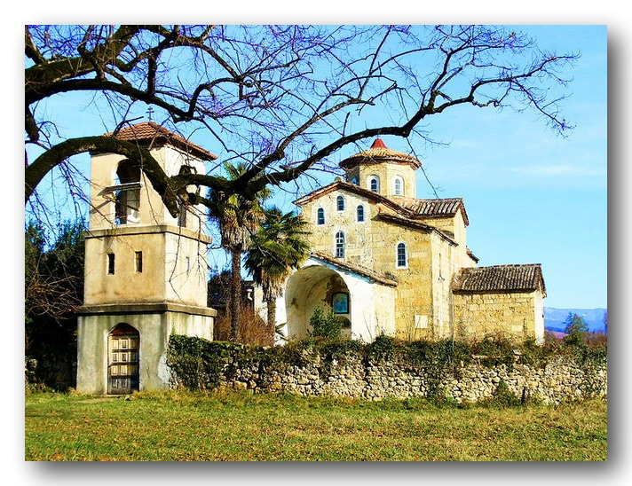

5 05 2013 (1469 дней 21 час назад)
Христос воскресе! Первое воскресение после Пасхи посвящает Церковь евангельскому рассказу о Фоме – ученике Христовом, сказавшем, что он не поверит в Воскресение Иисуса Христа, пока сам не прикоснется к Нему. Вот этот рассказ: «Фома, один из двенадцати, называемый Близнец, – пишет евангелист Иоанн, – не был тут (то есть с другими учениками, когда явился им Воскресший Господь). Другие ученики сказали ему: «Мы видели Господа. Но он сказал им: пока не увижу на руках Его ран от гвоздей, и не вложу и не вложу руки моей в ребра Его, не поверю». После восьми дней опять были в доме ученики Его, и Фома с ними. Пришел Иисус, когда двери были заперты, стал посреди них и сказал: «Мир вам!» Потом говорит Фоме: «Подай перст твой сюда и посмотри руки Мои, и не будь неверующим, но верующим». Фома сказал Ему в ответ: «Господь мой и Бог мой!» Иисус говорит: «Ты поверил, потому что увидел Меня; блаженны не видевшие и уверовавшие» (Иоан.20:24-29) Спросим себя: в чем смысл этого рассказа? И почему сразу после Пасхи обращает Церковь на него наше внимание, как бы говоря нам: «Это для вас написано, это касается каждого из вас»? И действительно, если только вдуматься в него, этот рассказ оказывается рассказом нам о чем-то, что вечно совершается в мире, и в наши дни может быть больше и чаще, чем в дни встречи Фомы Неверующего со своим воскресшим Учителем. О чем же идет речь? Конечно, прежде всего, о вере, о сущности ее, о коренном отличии ее от того рационального знания, которое основано на том, что мы сами видели, сами слышали, сами осязали.
Все христианство (нужно ли это доказывать?) основано на вере в Воскресение Христово, на вере в то, что хотя бы один раз в нашей земной истории, в нашем земной мире смерть была побеждена и мертвый воскрес. И если нет этой веры, то, в сущности, от христианства остается некое общее учение о любви, о добре, о прощении – учение, которое можно найти в других религиях и других философиях. Остается рассказ об удивительном, ни на одного другого непохожем человеке, но который – в том-то и все дело – в главном ошибся, ибо, сказав: «И в третий день воскресну» (Матф.16:21), не воскрес. Остается рассказ о неудаче, провале и, наконец, обмане. А ведь быть христианином с самого начала означало верить именно вот в эту неслыханную, невозможную и, тем не менее, реальную, реально совершившуюся победу над смертью. «Если Христос не воскрес, – говорит апостол Павел, – то вера ваша тщетна» (1Кор.15:14). Если все это так, тогда все в христианстве зависит от вопроса: как же можно поверить? Никто из нас своими глазами не видел Воскресшего, не трогал Его руки, не прикасался к пронзенному копьем ребру Его, однако именно об этой вере сказано: «Блаженны не видевшие и уверовавшие» (Иоан.20:29). Итак, как же поверить? Сослаться на опыт других людей, на то, что так учит Церковь? Да, конечно, но все же это еще не наша, не моя вера. А между тем, нам все время твердят, что всякое знание основано на доказательствах, нас все время учат, что, в сущности, Фома Неверующий был прав, отказавшись верить без доказательств, без прикосновений. Да и Сам Господь не осудил его, Сам предложил ему проверить реальность Своего присутствия прикосновением к Нему. И все же, говорит Господь, «блаженны не увидевшие и уверовавшие» (Иоан.20:29).
И вот, углубляясь в свою веру, как бы и на этот раз проверяя ее рассказом о Фоме Неверующем, приходишь к одному ясному чувству, к одному ответу. Спрашиваю себя: «Верю ли я в Воскресение Христово? Да, верю. Как, почему?» И сердце отвечает: «Потому что я верю во Христа, того Христа, что говорит мне, что является мне со страниц вечно живых и животворных страниц Евангелия». Или, другими словами, так: я не потому верю в Христа, что Он воскрес, а я потому верю в то, что Он воскрес и жив, что верю в Него и, прежде всего, верю Ему. «Никогда не говорил человек так, как Этот Человек» (Иоан.7:46), – ответили те, которых фарисеи послали слушать Иисуса, чтобы собрать против Него обвинения. И это же самое знает и вечно узнает мое сердце. Если сказал Господь: «Не оставлю вас сиротами, приду к вам» (Иоан.14:18), если сказал: «И в третий день воскресну» (Матф.16:21), если сквозь всю жизнь, сквозь все Евангелие жил Он ожиданием этой встречи со смертью, чтобы победить ее, то это не может быть обманом. Не мог Человек этот обмануть, не могло это учение, целиком направленное на победу Божью, на Царство, пришедшее в силе, быть обманом.
Итак, или – или. Или не было в истории более трагического и страшного обмана, или же все – правда, все – жизнь, все – победа в Евангелии. Да, вся эта книга, каждое слово, написанное в ней, дышит опытом писавших ее. И это опыт тех, кто видел Воскресшего, и потому задыхается от радости, ослеплен светом, наполнен самой победной из всех вер. И чем же побеждала, чем и сейчас побеждает Церковь, как не только вот этим радостным утверждением: «Христос воскресе!» В чем вся ее жизнь, как не в радостном опыте все новой и новой встречи с воскресшим, с живым, с приходящим. «И мы придем, и обитель сотворим» (Иоан.14:23). «Блаженны не видевшие и уверовавшие» (Иоан.20:29). Да, блаженны. И это блаженство, мы знаем, и о Нем свидетельствует.
Вот, всего лишь несколько дней тому назад мы снова испытали его в лучезарную пасхальную ночь перед закрытыми дверями храма, когда не из ума с его проверками и доказательствами, а из всего существа, их последней глубины опыта отвечали мы: «Востину, воистину воскресе Христос!». И хорошо в эти последние дни читать о Фоме Неверующем, хорошо углубляться в свою веру, хорошо как бы обновлять ее, находить ее животворную глубину и сердцевину. Вся она – в словах пасхального песнопения: «Христос воскресе из мертвых, смертию смерть поправ и сущим во гробех живот даровав». Нет у нас доказательств, есть только вера и блаженная радость ее присутствия, ее жизни в нашей жизни. Воистину воскресе Христос!
Протопресвитер Александр Шмеман – выдающийся проповедник и богослов, один из известнейших священников XX века, декан Свято-Владимирской духовной семинарии в Нью-Йорке.
Икона с Церкви св.Василиска Команского. Абхазия
ҚЬЫРСА ДЫБЗАХЕИТ!
Χριστός Ανέστη!
Христос Воскресе!
Воскресение Христа из мертвых является самым важным моментом истории человеческого рода. Победа Богочеловека Иисуса Христа над смертью и проклятием сделала возможным наследование Вечной Жизни.
Можем ли мы себе представить насколько значимо это историческое Событие в жизни каждого из нас? Наверное, не найдутся такие слова, чтобы описать эту величайшую радость, которой мы, люди, удостоились благодаря божественному смирению Господа и Спасителя Иисуса Христа. Святая Церковь через богомудрых учителей составила такие гимны, в которых мы воспеваем в каждую пасхальную ночь преславное Воскресение Господне. В одном из таких гимнов мы можем услышать слова: «Веселись и весь мир видимый и невидимый; ибо восстал Христос, вечная всем радость». Наш, видимый человеческий мир, и невидимый мир святых бесплотных ангелов призван возрадоваться и возвеселиться воскресением Христа Спасителя из мертвых. А это возможно тогда, когда наша жизнь соответствует вечному Завету человека с Богом. Несомненно, такая жизнь может показаться очень трудным путем, но другого пути для нас не существует. Главнейшей истиной помогающей следовать по этому пути является заповедь Христа: «Любите друг друга, как и Я возлюбил вас» (Ин. 13. 34). Поэтому, только через взаимное уважение и истинную братскую любовь мы можем удостоиться Царства Христа – Царства Правды. И не может войти туда ничто нечистое, завистливое, ненавистное, порабощенное греху и страстям (Откр. 3,4).

За многие века существования нашего народа, нам, абхазам, пришлось претерпевать много зла и бороться со многими трудностями. Каждая эпоха оставляла на нас как положительный, так и отрицательный отпечаток. И мы должны избегать того, чтобы говорить о себе так, как будто мы являемся совершенным или исключительным этносом, ибо в противном случае впадем в грех диавольского помрачения. Особенно важным и актуальным это становиться сейчас, когда в окружающем нас мире меняются ценности, как культурные, так и религиозные. Осознавая себя христианами, мы можем преодолеть искушения «мира сего» только лишь с Богом. Для этого нам необходимо жить в согласии с заповедями Его. И тогда воскресший Господь Иисус Христос, воскресит и нас для Вечной Жизни в Царстве Своем!
Аб Давид